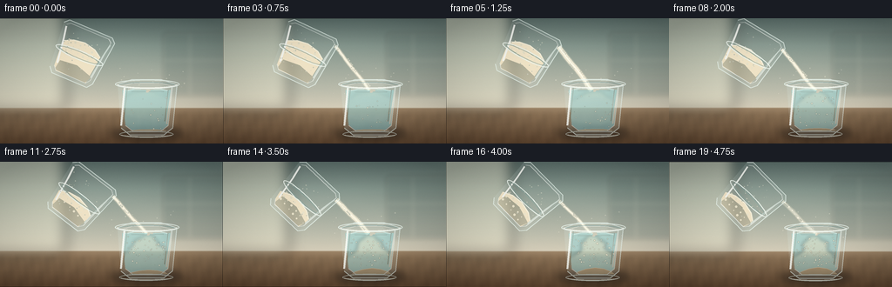
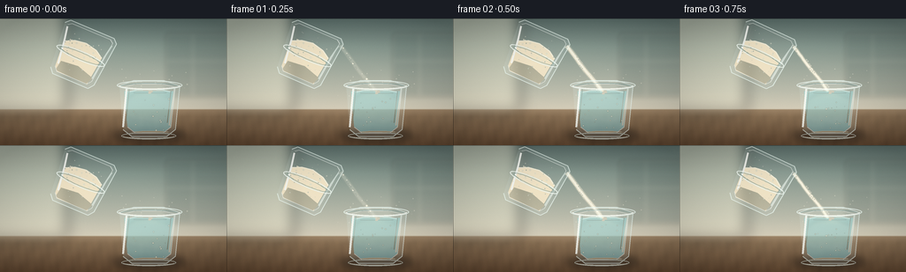
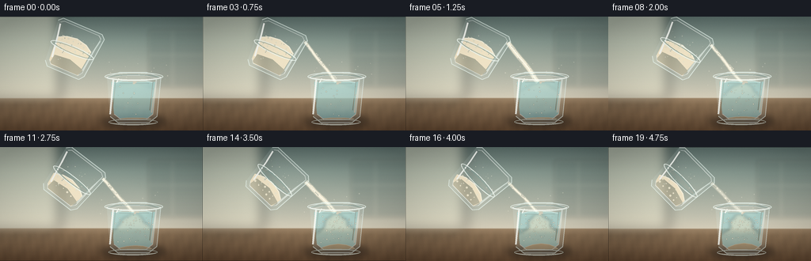

CODING AGENTS AS PIXEL WORLD MODELS
traex/DeepSeek-V4.1-Flash · material_0019
点击播放 · 原生 RGB 像素
逐轮保存的候选
回放视频、检查图与代码变化。
每份候选均可单独播放。实际图片检查记录在下方工具轨迹中。
候选 01播放与检查图
点击播放 · 原生 RGB 像素

展开代码变化
--- 上一保存版本
+++ 本次保存版本
@@ -0,0 +1,433 @@
+from __future__ import annotations
+
+import math
+from pathlib import Path
+
+import numpy as np
+from PIL import Image, ImageDraw, ImageFilter
+
+from artifact_io import save
+
+
+CASE_DIR = Path(__file__).resolve().parent
+WIDTH, HEIGHT, FRAMES, FPS = 256, 144, 20, 4.0
+SS = 4
+W, H = WIDTH * SS, HEIGHT * SS
+RNG = np.random.default_rng(20261111)
+
+
+def srgb(rgb):
+ return tuple(max(0, min(255, int(round(v)))) for v in rgb)
+
+
+def rgba(rgb, alpha=255):
+ return (*srgb(rgb), int(max(0, min(255, alpha))))
+
+
+def sc(value):
+ return int(round(value * SS))
+
+
+def smoothstep(a, b, x):
+ t = max(0.0, min(1.0, (x - a) / (b - a)))
+ return t * t * (3.0 - 2.0 * t)
+
+
+def ellipse_points(cx, cy, rx, ry, count=64):
+ angles = np.linspace(0.0, math.tau, count, endpoint=False)
+ return [(cx + rx * math.cos(a), cy + ry * math.sin(a)) for a in angles]
+
+
+def scaled_points(points):
+ return [(sc(x), sc(y)) for x, y in points]
+
+
+def gradient_image(size, stops):
+ """Vertical smooth gradient; stops are (position, (r,g,b))."""
+ w, h = size
+ y = np.linspace(0.0, 1.0, h, dtype=np.float32)
+ out = np.empty((h, 3), dtype=np.float32)
+ for channel in range(3):
+ out[:, channel] = np.interp(
+ y, [p for p, _ in stops], [color[channel] for _, color in stops]
+ )
+ return Image.fromarray(np.repeat(out[:, None, :], w, axis=1).astype(np.uint8))
+
+
+def soft_ellipse(layer, box, fill, blur):
+ patch = Image.new("RGBA", layer.size, (0, 0, 0, 0))
+ ImageDraw.Draw(patch).ellipse(box, fill=fill)
+ layer.alpha_composite(patch.filter(ImageFilter.GaussianBlur(blur)))
+
+
+def make_background():
+ bg = gradient_image(
+ (W, H),
+ [
+ (0.00, (87, 105, 101)),
+ (0.22, (131, 148, 139)),
+ (0.57, (184, 185, 169)),
+ (0.71, (208, 201, 181)),
+ (0.72, (154, 130, 102)),
+ (1.00, (103, 79, 58)),
+ ],
+ ).convert("RGBA")
+
+ # A window-shaped pool of soft daylight in the background.
+ glow = Image.new("RGBA", (W, H), (0, 0, 0, 0))
+ gd = ImageDraw.Draw(glow)
+ gd.rounded_rectangle(
+ (sc(-24), sc(-18), sc(76), sc(107)), radius=sc(8), fill=(236, 231, 206, 112)
+ )
+ glow = glow.filter(ImageFilter.GaussianBlur(sc(8)))
+ bg.alpha_composite(glow)
+
+ # Blurred kitchen geometry gives depth without competing with the glasses.
+ bokeh = Image.new("RGBA", (W, H), (0, 0, 0, 0))
+ bd = ImageDraw.Draw(bokeh)
+ bd.rounded_rectangle(
+ (sc(187), sc(16), sc(283), sc(89)),
+ radius=sc(4),
+ fill=(83, 99, 94, 58),
+ outline=(232, 226, 205, 34),
+ width=sc(1.1),
+ )
+ bd.line((sc(218), sc(16), sc(218), sc(89)), fill=(224, 218, 198, 25), width=sc(0.8))
+ bd.line((sc(187), sc(48), sc(283), sc(48)), fill=(224, 218, 198, 22), width=sc(0.8))
+ bokeh = bokeh.filter(ImageFilter.GaussianBlur(sc(2.2)))
+ bg.alpha_composite(bokeh)
+
+ # Tabletop with a restrained wood-grain pattern.
+ arr = np.asarray(bg).copy()
+ yy = np.arange(H, dtype=np.float32)[:, None] / H
+ xx = np.arange(W, dtype=np.float32)[None, :] / W
+ table = yy > 0.715
+ grain = (
+ 5.5 * np.sin(xx * 85.0 + yy * 22.0)
+ + 2.7 * np.sin(xx * 191.0 - yy * 13.0)
+ + 1.6 * np.sin(xx * 43.0 + yy * 67.0)
+ )
+ edge = np.clip((yy - 0.715) * 18.0, 0.0, 1.0)
+ for c, amount in enumerate((0.45, 0.35, 0.25)):
+ arr[:, :, c] = np.clip(
+ arr[:, :, c].astype(np.float32)
+ + table * edge * grain * amount
+ - table * edge * 12.0,
+ 0,
+ 255,
+ )
+ bg = Image.fromarray(arr.astype(np.uint8), "RGBA")
+
+ # Contact shadows under the lower glass.
+ shadow = Image.new("RGBA", (W, H), (0, 0, 0, 0))
+ sd = ImageDraw.Draw(shadow)
+ sd.ellipse(
+ (sc(127), sc(124), sc(211), sc(141)), fill=(35, 29, 24, 112)
+ )
+ sd.ellipse(
+ (sc(141), sc(128), sc(194), sc(138)), fill=(23, 22, 19, 120)
+ )
+ bg.alpha_composite(shadow.filter(ImageFilter.GaussianBlur(sc(3.5))))
+ return bg
+
+
+BG = make_background()
+
+
+def draw_lower_glass(frame_index, progress):
+ layer = Image.new("RGBA", (W, H), (0, 0, 0, 0))
+ draw = ImageDraw.Draw(layer)
+
+ # Outer and inner silhouettes: a slightly flared, thin-walled tumbler.
+ outer = [(135, 76), (151, 70), (185, 70), (203, 76), (198, 126), (188, 134), (149, 134), (139, 126)]
+ inner = [(140, 78), (153, 74), (183, 74), (198, 78), (193, 123), (184, 130), (153, 130), (144, 123)]
+ draw.polygon(scaled_points(outer), fill=(218, 236, 232, 38))
+
+ # Water body, clipped to the inner glass.
+ water_mask = Image.new("L", (W, H), 0)
+ wm = ImageDraw.Draw(water_mask)
+ wm.polygon(scaled_points(inner), fill=255)
+ wm.rectangle((0, 0, W, sc(82)), fill=0)
+
+ water = Image.new("RGBA", (W, H), (0, 0, 0, 0))
+ wa = np.zeros((H, W, 4), dtype=np.uint8)
+ y0, y1 = sc(82), sc(130)
+ yy = np.linspace(0.0, 1.0, max(1, y1 - y0), dtype=np.float32)[:, None]
+ top = np.array([160, 213, 211], dtype=np.float32)
+ bottom = np.array([126, 182, 187], dtype=np.float32)
+ rgb = top[None, None, :] * (1.0 - yy[:, :, None]) + bottom[None, None, :] * yy[:, :, None]
+ wa[y0:y1, :, :3] = rgb.astype(np.uint8)
+ wa[y0:y1, :, 3] = 148
+ water = Image.fromarray(wa, "RGBA")
+ layer.alpha_composite(Image.composite(water, Image.new("RGBA", (W, H), (0, 0, 0, 0)), water_mask))
+
+ # Turbidity grows from the impact zone and eventually fills the glass.
+ cloud_mask = Image.new("L", (W, H), 0)
+ cm = ImageDraw.Draw(cloud_mask)
+ cm.polygon(scaled_points(inner), fill=255)
+ cm.rectangle((0, 0, W, sc(84)), fill=0)
+ cloud = Image.new("RGBA", (W, H), (0, 0, 0, 0))
+ cd = ImageDraw.Draw(cloud)
+ amount = smoothstep(0.04, 0.92, progress)
+ base_alpha = 24 + 92 * amount
+ plume_height = 17 + 35 * amount
+ for i in range(19):
+ u = (i + 0.5) / 19.0
+ cx = 168.0 + 10.0 * math.sin(i * 2.19 + frame_index * 0.21) * (0.25 + u)
+ cy = 88.0 + plume_height * u + 2.0 * math.sin(i * 1.37)
+ rx = 7.0 + 19.0 * u + 2.0 * math.sin(i * 0.9)
+ ry = 5.0 + 10.0 * u
+ alpha = int(np.clip(base_alpha * (0.35 + 0.65 * math.sin(math.pi * min(1.0, u + 0.16))), 0, 118))
+ cd.ellipse(
+ (sc(cx - rx), sc(cy - ry), sc(cx + rx), sc(cy + ry)),
+ fill=(234, 220, 187, alpha),
+ )
+ # Broad pale suspension lower in the water.
+ for i in range(10):
+ cx = 149 + i * 4.4
+ cy = 107 + 13 * smoothstep(0.15, 0.9, progress) + 2.2 * math.sin(i * 2.4 + frame_index)
+ rx = 8 + 8 * smoothstep(0.2, 0.85, progress)
+ ry = 5 + 6 * smoothstep(0.2, 0.85, progress)
+ cd.ellipse(
+ (sc(cx - rx), sc(cy - ry), sc(cx + rx), sc(cy + ry)),
+ fill=(225, 210, 174, int(11 + 30 * amount)),
+ )
+ cloud = cloud.filter(ImageFilter.GaussianBlur(sc(2.0)))
+ layer.alpha_composite(Image.composite(cloud, Image.new("RGBA", (W, H), (0, 0, 0, 0)), cloud_mask))
+
+ # Fine grains suspended in the water.
+ grains = Image.new("RGBA", (W, H), (0, 0, 0, 0))
+ gd = ImageDraw.Draw(grains)
+ n_grains = int(18 + 66 * amount)
+ for i in range(n_grains):
+ phase = RNG.random()
+ gx = 146 + RNG.random() * 47
+ gy = 88 + RNG.random() * (39 - 9 * amount)
+ gy += 2.0 * math.sin(frame_index * 0.7 + phase * 6.28)
+ r = 0.25 + 0.65 * RNG.random()
+ gd.ellipse(
+ (sc(gx - r), sc(gy - r), sc(gx + r), sc(gy + r)),
+ fill=(248, 237, 210, int(75 + 100 * RNG.random())),
+ )
+ grains = grains.filter(ImageFilter.GaussianBlur(sc(0.22)))
+ layer.alpha_composite(Image.composite(grains, Image.new("RGBA", (W, H), (0, 0, 0, 0)), cloud_mask))
+
+ # Flour sediment forms a soft mound on the bottom.
+ sediment_h = 1.5 + 6.5 * smoothstep(0.18, 1.0, progress)
+ sediment_pts = [
+ (148, 129),
+ (151, 129 - sediment_h * 0.35),
+ (160, 129 - sediment_h * 0.78),
+ (171, 129 - sediment_h),
+ (181, 129 - sediment_h * 0.82),
+ (190, 129 - sediment_h * 0.35),
+ (193, 129),
+ ]
+ draw.polygon(scaled_points(sediment_pts), fill=(225, 207, 167, 112))
+ draw.line(scaled_points(sediment_pts[1:-1]), fill=(245, 233, 203, 135), width=sc(0.65))
+
+ # Water surface meniscus and small impact disturbance.
+ surface_y = 82.0 + 0.7 * math.sin(frame_index * 0.9)
+ meniscus = [(145, surface_y + 1.0), (154, surface_y - 1.0), (169, surface_y - 1.5), (184, surface_y - 1.0), (193, surface_y + 1.0)]
+ draw.line(scaled_points(meniscus), fill=(214, 245, 241, 180), width=sc(1.15))
+ draw.line(scaled_points([(151, surface_y + 2), (168, surface_y + 2.3), (188, surface_y + 1.9)]), fill=(92, 151, 157, 95), width=sc(0.7))
+
+ impact = 0.45 + 0.55 * math.sin(math.pi * min(1.0, progress * 1.1))
+ for i in range(9):
+ ang = -1.25 + i * 0.31
+ rr = 3.5 + (i % 3) * 1.8
+ ix = 168 + math.cos(ang) * rr * impact
+ iy = surface_y + math.sin(ang) * rr * 0.34
+ draw.ellipse(
+ (sc(ix - 1.5), sc(iy - 0.8), sc(ix + 1.5), sc(iy + 0.8)),
+ fill=(244, 235, 212, 82),
+ )
+
+ # Glass edges and refractive side strips.
+ draw.line(scaled_points(outer), fill=(229, 244, 240, 148), width=sc(1.0), joint="curve")
+ draw.line(scaled_points(inner), fill=(249, 255, 251, 128), width=sc(0.75), joint="curve")
+ draw.line([(sc(143), sc(79)), (sc(139), sc(123))], fill=(249, 255, 251, 200), width=sc(2.3))
+ draw.line([(sc(146), sc(80)), (sc(142), sc(119))], fill=(92, 154, 158, 80), width=sc(0.8))
+ draw.line([(sc(197), sc(79)), (sc(191), sc(121))], fill=(237, 250, 244, 124), width=sc(1.5))
+ draw.line([(sc(193), sc(82)), (sc(189), sc(118))], fill=(80, 133, 137, 65), width=sc(0.8))
+
+ # Rims and base ellipses.
+ draw.ellipse((sc(132), sc(70), sc(206), sc(81)), outline=(235, 247, 241, 182), width=sc(1.15))
+ draw.arc((sc(134), sc(71), sc(204), sc(80)), 4, 176, fill=(255, 255, 248, 208), width=sc(1.0))
+ draw.arc((sc(136), sc(73), sc(201), sc(81)), 190, 350, fill=(86, 138, 142, 102), width=sc(0.8))
+ draw.ellipse((sc(137), sc(129), sc(199), sc(137)), outline=(225, 241, 234, 138), width=sc(0.9))
+ draw.arc((sc(139), sc(131), sc(197), sc(136)), 5, 175, fill=(249, 253, 241, 156), width=sc(0.8))
+ return layer
+
+
+def rot(point, angle_deg, cx, cy):
+ x, y = point
+ a = math.radians(angle_deg)
+ ca, sa = math.cos(a), math.sin(a)
+ return (cx + x * ca - y * sa, cy + x * sa + y * ca)
+
+
+def local_ellipse(cx, cy, rx, ry, angle, ox, oy):
+ return [rot((x - cx, y - cy), angle, ox, oy) for x, y in ellipse_points(cx, cy, rx, ry, 56)]
+
+
+def draw_upper_glass(frame_index, progress):
+ layer = Image.new("RGBA", (W, H), (0, 0, 0, 0))
+ draw = ImageDraw.Draw(layer)
+ angle = 23.0 + 23.0 * smoothstep(0.02, 0.96, progress) + 0.7 * math.sin(frame_index * 0.55)
+ ox, oy = 91.0, 42.0
+
+ # Tumbler silhouette in local coordinates, rotated clockwise toward the pour.
+ local_outer = [
+ (-31, -28), (-26, -33), (27, -33), (32, -28),
+ (27, 25), (22, 31), (-21, 31), (-26, 25),
+ ]
+ local_inner = [
+ (-27, -27), (-23, -30), (24, -30), (28, -27),
+ (23, 22), (19, 27), (-18, 27), (-22, 22),
+ ]
+ outer = [rot(p, angle, ox, oy) for p in local_outer]
+ inner = [rot(p, angle, ox, oy) for p in local_inner]
+ draw.polygon(scaled_points(outer), fill=(216, 231, 226, 32))
+ draw.polygon(scaled_points(inner), fill=(247, 250, 241, 16))
+
+ # Remaining flour settles against the lower wall of the tilted glass.
+ fill = 0.88 - 0.48 * smoothstep(0.04, 0.9, progress)
+ cut = 25.0 - 46.0 * fill
+ flour_local = [(-22, 22), (-24, cut + 7), (-13, cut + 2), (0, cut), (14, cut + 3), (23, cut + 9), (19, 27), (-18, 27)]
+ flour = [rot(p, angle, ox, oy) for p in flour_local]
+ draw.polygon(scaled_points(flour), fill=(237, 224, 195, 246))
+ # Warm shadow inside the flour mass and bright top edge.
+ shade = [rot(p, angle, ox, oy) for p in [(-20, 26), (-18, 14), (2, 12), (22, 18), (18, 27)]]
+ draw.polygon(scaled_points(shade), fill=(205, 185, 148, 92))
+ top_edge = [rot(p, angle, ox, oy) for p in [(-23, cut + 7), (-13, cut + 2), (0, cut), (14, cut + 3), (23, cut + 9)]]
+ draw.line(scaled_points(top_edge), fill=(252, 244, 222, 220), width=sc(1.15), joint="curve")
+
+ # Small flour peaks and crumbs.
+ for i in range(16):
+ lx = -18 + (i * 7.3) % 36
+ ly = cut + 3 + ((i * 11) % 15)
+ p = rot((lx, ly), angle, ox, oy)
+ r = 0.5 + (i % 3) * 0.35
+ draw.ellipse((sc(p[0] - r), sc(p[1] - r), sc(p[0] + r), sc(p[1] + r)), fill=(251, 240, 213, 190))
+
+ # Glass walls and highlights.
+ draw.line(scaled_points(outer), fill=(232, 244, 237, 178), width=sc(1.0), joint="curve")
+ draw.line(scaled_points(inner), fill=(253, 255, 249, 150), width=sc(0.75), joint="curve")
+ left_hi = [rot(p, angle, ox, oy) for p in [(-27, -25), (-24, -10), (-20, 18)]]
+ right_hi = [rot(p, angle, ox, oy) for p in [(28, -24), (25, -8), (22, 19)]]
+ draw.line(scaled_points(left_hi), fill=(255, 255, 250, 210), width=sc(2.0))
+ draw.line(scaled_points(right_hi), fill=(240, 251, 244, 145), width=sc(1.4))
+
+ # Mouth rim is an ellipse transformed with the glass.
+ rim = local_ellipse(0, -30, 29, 5.2, angle, ox, oy)
+ draw.line(scaled_points(rim), fill=(243, 251, 244, 215), width=sc(1.0), joint="curve")
+ rim_inner = local_ellipse(0, -30, 25, 3.7, angle, ox, oy)
+ draw.line(scaled_points(rim_inner), fill=(132, 171, 166, 105), width=sc(0.65), joint="curve")
+
+ # A little flour dusting the inside of the glass.
+ for i in range(22):
+ lx = -23 + RNG.random() * 46
+ ly = -24 + RNG.random() * 44
+ p = rot((lx, ly), angle, ox, oy)
+ r = 0.2 + RNG.random() * 0.5
+ draw.ellipse((sc(p[0] - r), sc(p[1] - r), sc(p[0] + r), sc(p[1] + r)), fill=(250, 242, 220, 100))
+ return layer, (ox, oy, angle, cut)
+
+
+def draw_stream_and_dust(frame_index, progress, glass_pose):
+ layer = Image.new("RGBA", (W, H), (0, 0, 0, 0))
+ draw = ImageDraw.Draw(layer)
+ ox, oy, angle, cut = glass_pose
+
+ # Lower lip of the tilted glass, where the stream leaves the vessel.
+ lip_local = (29.5, -25.5)
+ lip = rot(lip_local, angle, ox, oy)
+ target_x = 168.0
+ target_y = 83.0
+ flow = smoothstep(0.02, 0.12, progress) * (1.0 - 0.35 * smoothstep(0.85, 1.0, progress))
+ width = (3.4 + 1.2 * math.sin(frame_index * 1.5) + 0.5 * math.sin(frame_index * 3.1)) * (0.55 + 0.45 * flow)
+
+ if flow > 0.02:
+ points = []
+ steps = 18
+ for i in range(steps + 1):
+ u = i / steps
+ x = lip[0] * (1 - u) + target_x * u
+ x += 1.1 * math.sin(u * 8.0 + frame_index * 0.65) * u
+ y = lip[1] * (1 - u) + target_y * u
+ points.append((x, y))
+ # Soft edge, bright center, then fine grain streaks.
+ draw.line(scaled_points(points), fill=(242, 232, 208, int(72 * flow)), width=sc(width + 2.6), joint="curve")
+ draw.line(scaled_points(points), fill=(251, 242, 219, int(210 * flow)), width=sc(width + 0.6), joint="curve")
+ draw.line(scaled_points(points), fill=(255, 251, 234, int(235 * flow)), width=sc(max(0.7, width * 0.38)), joint="curve")
+ for i in range(9):
+ u = (i + 0.5) / 9.0
+ x = lip[0] * (1 - u) + target_x * u + 1.2 * math.sin(u * 9 + frame_index)
+ y = lip[1] * (1 - u) + target_y * u
+ rr = 0.35 + 0.55 * ((i * 7 + frame_index) % 4) / 3
+ draw.ellipse((sc(x - rr), sc(y - rr), sc(x + rr), sc(y + rr)), fill=(255, 248, 228, 220))
+
+ # Airborne grains around the falling ribbon.
+ if flow > 0.1:
+ for i in range(22):
+ u = (i * 0.173 + frame_index * 0.047) % 1.0
+ x = lip[0] * (1 - u) + target_x * u
+ y = lip[1] * (1 - u) + target_y * u
+ x += math.sin(i * 4.2 + frame_index * 1.3) * (1.5 + 2.8 * u)
+ y -= ((i * 3.7 + frame_index * 5) % 7) * 0.22
+ r = 0.25 + ((i * 5) % 3) * 0.28
+ draw.ellipse((sc(x - r), sc(y - r), sc(x + r), sc(y + r)), fill=(248, 239, 217, int(115 * flow)))
+
+ # A few motes drift slowly above the lower glass.
+ for i in range(17):
+ x = 125 + (i * 17.3 + frame_index * 0.45) % 88
+ y = 57 + (i * 9.7 - frame_index * 0.7) % 31
+ r = 0.2 + (i % 3) * 0.23
+ draw.ellipse((sc(x - r), sc(y - r), sc(x + r), sc(y + r)), fill=(250, 242, 222, 76))
+ return layer
+
+
+def render_frame(frame_index):
+ progress = frame_index / (FRAMES - 1)
+ frame = BG.copy()
+ lower = draw_lower_glass(frame_index, progress)
+ upper, pose = draw_upper_glass(frame_index, progress)
+ stream = draw_stream_and_dust(frame_index, progress, pose)
+
+ # Draw the upper glass and stream behind the front rim of the lower glass
+ # where they overlap, then add the lower glass on top for correct occlusion.
+ frame.alpha_composite(stream)
+ frame.alpha_composite(upper)
+ frame.alpha_composite(lower)
+
+ # Gentle handheld framing, applied to the completed scene.
+ dx = int(round(0.35 * math.sin(frame_index * 0.43) * SS))
+ dy = int(round(0.22 * math.sin(frame_index * 0.31 + 1.2) * SS))
+ if dx or dy:
+ shifted = Image.new("RGBA", (W, H), (0, 0, 0, 0))
+ shifted.paste(frame, (dx, dy))
+ frame = shifted
+
+ # Optical vignette and restrained sensor grain.
+ arr = np.asarray(frame.convert("RGB"), dtype=np.float32)
+ yy, xx = np.mgrid[0:H, 0:W]
+ nx = (xx / (W - 1) - 0.5) * 2.0
+ ny = (yy / (H - 1) - 0.5) * 2.0
+ vignette = np.clip(1.04 - 0.12 * (nx * nx + ny * ny), 0.84, 1.02)
+ arr *= vignette[:, :, None]
+ noise_rng = np.random.default_rng(5000 + frame_index)
+ grain = noise_rng.normal(0.0, 1.35, (H, W, 1)).astype(np.float32)
+ arr = np.clip(arr + grain, 0, 255).astype(np.uint8)
+ image = Image.fromarray(arr).resize((WIDTH, HEIGHT), Image.Resampling.LANCZOS)
+ return np.asarray(image, dtype=np.uint8)
+
+
+def main():
+ frames = np.stack([render_frame(i) for i in range(FRAMES)])
+ save(frames, CASE_DIR)
+ print(f"wrote {frames.shape} RGB frames to {CASE_DIR}")
+
+
+if __name__ == "__main__":
+ main()
候选 02播放与检查图
点击播放 · 原生 RGB 像素

展开代码变化
--- 上一保存版本
+++ 本次保存版本
@@ -199,15 +199,26 @@
grains = Image.new("RGBA", (W, H), (0, 0, 0, 0))
gd = ImageDraw.Draw(grains)
n_grains = int(18 + 66 * amount)
+ grain_rng = np.random.default_rng(7091)
+ grain_bank = [
+ (
+ grain_rng.random(),
+ grain_rng.random(),
+ grain_rng.random(),
+ grain_rng.random(),
+ grain_rng.random(),
+ )
+ for _ in range(84)
+ ]
for i in range(n_grains):
- phase = RNG.random()
- gx = 146 + RNG.random() * 47
- gy = 88 + RNG.random() * (39 - 9 * amount)
+ px, py, phase, radius, alpha = grain_bank[i]
+ gx = 146 + px * 47
+ gy = 88 + py * (39 - 9 * amount)
gy += 2.0 * math.sin(frame_index * 0.7 + phase * 6.28)
- r = 0.25 + 0.65 * RNG.random()
+ r = 0.25 + 0.65 * radius
gd.ellipse(
(sc(gx - r), sc(gy - r), sc(gx + r), sc(gy + r)),
- fill=(248, 237, 210, int(75 + 100 * RNG.random())),
+ fill=(248, 237, 210, int(75 + 100 * alpha)),
)
grains = grains.filter(ImageFilter.GaussianBlur(sc(0.22)))
layer.alpha_composite(Image.composite(grains, Image.new("RGBA", (W, H), (0, 0, 0, 0)), cloud_mask))
@@ -250,6 +261,7 @@
draw.line([(sc(146), sc(80)), (sc(142), sc(119))], fill=(92, 154, 158, 80), width=sc(0.8))
draw.line([(sc(197), sc(79)), (sc(191), sc(121))], fill=(237, 250, 244, 124), width=sc(1.5))
draw.line([(sc(193), sc(82)), (sc(189), sc(118))], fill=(80, 133, 137, 65), width=sc(0.8))
+ draw.line([(sc(150), sc(78)), (sc(147), sc(83))], fill=(255, 255, 249, 214), width=sc(1.2))
# Rims and base ellipses.
draw.ellipse((sc(132), sc(70), sc(206), sc(81)), outline=(235, 247, 241, 182), width=sc(1.15))
@@ -326,11 +338,12 @@
draw.line(scaled_points(rim_inner), fill=(132, 171, 166, 105), width=sc(0.65), joint="curve")
# A little flour dusting the inside of the glass.
+ dust_rng = np.random.default_rng(417)
for i in range(22):
- lx = -23 + RNG.random() * 46
- ly = -24 + RNG.random() * 44
+ lx = -23 + dust_rng.random() * 46
+ ly = -24 + dust_rng.random() * 44
p = rot((lx, ly), angle, ox, oy)
- r = 0.2 + RNG.random() * 0.5
+ r = 0.2 + dust_rng.random() * 0.5
draw.ellipse((sc(p[0] - r), sc(p[1] - r), sc(p[0] + r), sc(p[1] + r)), fill=(250, 242, 220, 100))
return layer, (ox, oy, angle, cut)
候选 03播放与检查图

候选 04播放与检查图
点击播放 · 原生 RGB 像素

展开代码变化
--- 上一保存版本
+++ 本次保存版本
@@ -116,7 +116,7 @@
0,
255,
)
- bg = Image.fromarray(arr.astype(np.uint8), "RGBA")
+ bg = Image.fromarray(arr.astype(np.uint8))
# Contact shadows under the lower glass.
shadow = Image.new("RGBA", (W, H), (0, 0, 0, 0))
@@ -158,7 +158,7 @@
rgb = top[None, None, :] * (1.0 - yy[:, :, None]) + bottom[None, None, :] * yy[:, :, None]
wa[y0:y1, :, :3] = rgb.astype(np.uint8)
wa[y0:y1, :, 3] = 148
- water = Image.fromarray(wa, "RGBA")
+ water = Image.fromarray(wa)
layer.alpha_composite(Image.composite(water, Image.new("RGBA", (W, H), (0, 0, 0, 0)), water_mask))
# Turbidity grows from the impact zone and eventually fills the glass.
可观测工具轨迹
实际执行的命令与返回图片。
命令 1exit 0
/bin/bash -lc "pwd && rg --files -g '"'!*node_modules*'"' -g '"'!*.git*'"' | sed -n '1,200p'"
命令 2exit 0
/bin/bash -lc "sed -n '1,240p' prompt.txt"
命令 3exit 0
/bin/bash -lc "sed -n '1,260p' GENERATION_RULES.md"
命令 4exit 0
/bin/bash -lc 'cat task_spec.json'
命令 5exit 0
/bin/bash -lc "sed -n '1,260p' artifact_io.py"
命令 6exit 0
/bin/bash -lc "sed -n '1,260p' player_template.html"
命令 7exit 0
/bin/bash -lc "python - <<'PY'
import numpy, PIL
print('numpy', numpy.__version__)
print('PIL', PIL.__version__)
PY"命令 8exit 0
/bin/bash -lc 'python generate.py'
命令 9exit 1
/bin/bash -lc 'command -v chafa || command -v viu || command -v img2txt || command -v jp2'
命令 10exit 0
/bin/bash -lc "python - <<'PY'
from PIL import Image
import numpy as np
for name in ['inspection.png','transition_check.png']:
im=Image.open(name)
print(name, im.size, im.mode)
for i in [0,4,9,14,19]:
a=np.asarray(Image.open(f'frames/{i:02d}.png')).astype(float)
print(i, 'mean', a.mean(axis=(0,1)).round(1), 'std', a.std().round(1), 'range', (a.min(),a.max()))
PY"命令 11exit 0
/bin/bash -lc "python - <<'PY'
from PIL import Image
import numpy as np
im=np.asarray(Image.open('frames/09.png')).astype(float)
# coarse luminance ascii, preserve aspect using 2 chars per cell width
chars=' .:-=+*#%@'
g=im.mean(2)
h,w=g.shape
for y in range(0,h,4):
row=''
for x in range(0,w,2):
v=g[y:y+4,x:x+2].mean()
row += chars[min(len(chars)-1,int(v/256*len(chars)))]
print(row)
PY"命令 12exit 0
/bin/bash -lc 'python generate.py'
命令 13exit 0
/bin/bash -lc 'python generate.py'
保存候选 4 份；完成命令 13 次；可验证图片返回 0 张。原始 API 响应与完整日志保留在本地。